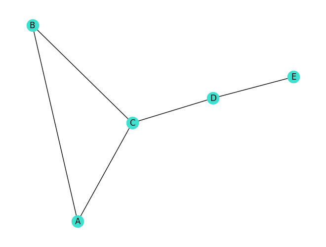
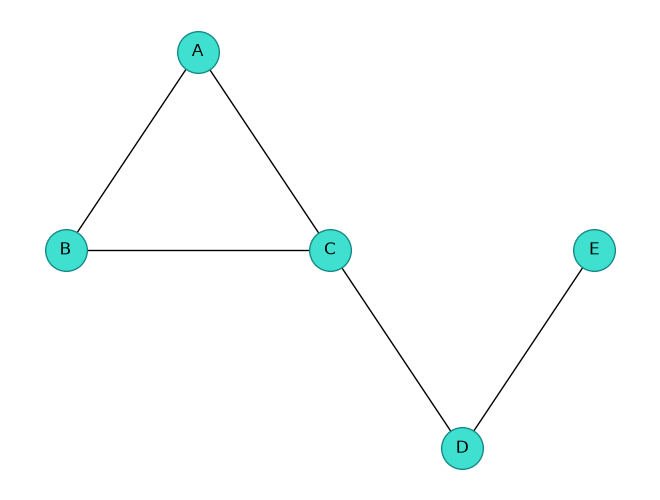
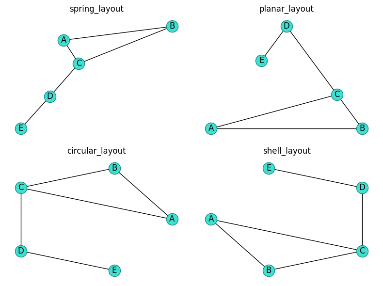
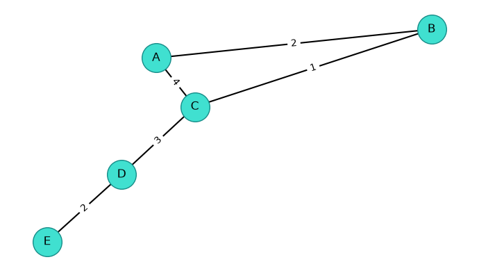

import matplotlib.pyplot as plt
import networkx as nx
print("NetworkX", nx.__version__)NetworkX 3.6.1Poniższy notatnik przedstawia cztery podstawowe klasy grafów w NetworkX, dostęp do danych krawędzi oraz podstawy wizualizacji.
Biblioteka NetworkX udostępnia cztery podstawowe klasy grafów: Graph, DiGraph, MultiGraph oraz MultiDiGraph. Różnią się one tym, czy krawędzie mają kierunek i czy pomiędzy tymi samymi wierzchołkami może występować wiele krawędzi.
NetworkX 3.6.1We wszystkich czterech klasach metoda add_edge(u, v) dodaje krawędź pomiędzy wierzchołkami ‘u’ oraz ‘v’. Nie dodajemy osobno wierzchołków, metoda tworzy je za nas. Atrybuty krawędzi (takie jak wagi, etykiety etc.) przekazujemy jako argumenty nazwane, na przykład weight=3 albo color="red". Wiele krawędzi można dodać za pomocą add_edges_from().
GraphGraph jest grafem nieskierowanym bez krawędzi wielokrotnych. Ponowne dodanie tej samej krawędzi nie tworzy nowej krawędzi, lecz aktualizuje jej słownik atrybutów. Funkcja add_edge(u, v) oraz add_edge(v, u) będzie miała ten sam efekt.
graph = nx.Graph() #tworzymy pusty graf nieskierowany
graph.add_edge("A", "B", weight=2) #tworzymy krawędź A--B z wagą 2
graph.add_edge("B", "A", color="turquoise") #dodajemy do krawędzi A-B atrybut
graph.add_edge("A", "C", weight=3, color="blue") #tworzymy krawędź A--C z wagą 3 i kolorem niebieskim
print("Wierzchołki:", list(graph.nodes))
print("Krawędzie:", list(graph.edges(data=True)))
print("Dane A--B:", dict(graph.edges["A", "B"]))
print("Sąsiedzi A z danymi:", dict(graph.adj["A"]))Wierzchołki: ['A', 'B', 'C']
Krawędzie: [('A', 'B', {'weight': 2, 'color': 'turquoise'}), ('A', 'C', {'weight': 3, 'color': 'blue'})]
Dane A--B: {'weight': 2, 'color': 'turquoise'}
Sąsiedzi A z danymi: {'B': {'weight': 2, 'color': 'turquoise'}, 'C': {'weight': 3, 'color': 'blue'}}Krawędź A--B ma atrybuty: {'weight': 2, 'color': 'turquoise'}
Krawędź A--C ma atrybuty: {'weight': 3, 'color': 'blue'}[('A', 'B', {'weight': 2, 'color': 'turquoise'}),
('A', 'C', {'weight': 3, 'color': 'blue'})]Krawędź A--B ma atrybuty: {'weight': 2, 'color': 'turquoise'}
Krawędź A--C ma atrybuty: {'weight': 3, 'color': 'blue'}Krawędź A--B ma atrybuty: {'weight': 2, 'color': 'turquoise'}
Krawędź A--C ma atrybuty: {'weight': 3, 'color': 'blue'}DiGraphDiGraph jest grafem skierowanym bez krawędzi wielokrotnych. Krawędzie u → v oraz v → u są różne. Ponowne dodanie u → v aktualizuje dane istniejącej krawędzi.
digraph = nx.DiGraph()
digraph.add_edge("A", "B", weight=2)
digraph.add_edge("B", "A", weight=5)
digraph.add_edge("A", "B", color="turquoise")
digraph.add_edge("A", "C", weight=3, color="blue")
print("Wierzchołki:", list(digraph.nodes))
print("Krawędzie:", list(digraph.edges(data=True)))
print("Dane A--B:", dict(digraph.edges["A", "B"]))
print("Następnicy A z danymi", dict(digraph.succ["A"]))
print("Poprzednicy A z danymi", dict(digraph.pred["A"]))Wierzchołki: ['A', 'B', 'C']
Krawędzie: [('A', 'B', {'weight': 2, 'color': 'turquoise'}), ('A', 'C', {'weight': 3, 'color': 'blue'}), ('B', 'A', {'weight': 5})]
Dane A--B: {'weight': 2, 'color': 'turquoise'}
Następnicy A z danymi {'B': {'weight': 2, 'color': 'turquoise'}, 'C': {'weight': 3, 'color': 'blue'}}
Poprzednicy A z danymi {'B': {'weight': 5}}Krawędź A-->B ma atrybuty: {'weight': 2, 'color': 'turquoise'}
Krawędź A-->C ma atrybuty: {'weight': 3, 'color': 'blue'}MultiGraphMultiGraph jest multigrafem nieskierowanym. Każde wywołanie add_edge(u, v) bez podanego klucza tworzy kolejną krawędź i zwraca jej utworzony automatycznie klucz. Podanie istniejącego klucza aktualizuje wskazaną krawędź. Można również używać własnych kluczy, na przykład key="A1".
multigraph = nx.MultiGraph()
multigraph.add_edge("A", "B", key="AB1", route="lokalna")
multigraph.add_edge("A", "B", key="AB2", route="ekspresowa")
multigraph.add_edge("B", "C", key="BC1", color="turquoise")
keyBC = multigraph.add_edge("B", "C", color="yellow")
print("Nadany klucz:", keyBC)
print("Krawędzie:")
for u, v, key, data in multigraph.edges(keys=True, data=True):
print(u, v, key, data)Nadany klucz: 1
Krawędzie:
A B AB1 {'route': 'lokalna'}
A B AB2 {'route': 'ekspresowa'}
B C BC1 {'color': 'turquoise'}
B C 1 {'color': 'yellow'}Dane krawędzi B--C o kluczu BC1: {'color': 'turquoise'}Krawędź A--B (klucz: AB1) ma atrybuty: {'route': 'lokalna'}
Krawędź A--B (klucz: AB2) ma atrybuty: {'route': 'ekspresowa'}AdjacencyView({'B': {'AB1': {'route': 'lokalna'}, 'AB2': {'route': 'ekspresowa'}}})Krawędź A--B (klucz: AB1) ma atrybuty: {'route': 'lokalna'}
Krawędź A--B (klucz: AB2) ma atrybuty: {'route': 'ekspresowa'}MultiDiGraphMultiDiGraph łączy kierunek z możliwością przechowywania krawędzi równoległych. Klucze są lokalne dla uporządkowanej pary końców. Dlatego pierwsza krawędź A → B i pierwsza krawędź B → A mogą otrzymać ten sam klucz.
multidigraph = nx.MultiDiGraph()
multidigraph.add_edge("A", "B", key="AB1", route="pierwsza")
multidigraph.add_edge("A", "B", key="AB2", route="druga")
multidigraph.add_edge("B", "A", route="powrotna")
for u, v, key, data in multidigraph.edges(keys=True, data=True):
print(f'Krawędź {u}-->{v} (klucz: {key}) ma atrybuty: {data}')Krawędź A-->B (klucz: AB1) ma atrybuty: {'route': 'pierwsza'}
Krawędź A-->B (klucz: AB2) ma atrybuty: {'route': 'druga'}
Krawędź B-->A (klucz: 0) ma atrybuty: {'route': 'powrotna'}Krawędź A-->B (klucz: AB1) ma atrybuty: {'route': 'pierwsza'}
Krawędź A-->B (klucz: AB2) ma atrybuty: {'route': 'druga'}Klucz multikrawędzi nie jest globalnym identyfikatorem. Ten sam klucz może pojawić się pomiędzy różnymi parami wierzchołków, a NetworkX nie utrzymuje dodatkowego indeksu key → końce krawędzi. Jeżeli znamy tylko klucz, musimy przejrzeć krawędzie.
[('Warszawa', 'Łódź', 'A1', {'length': 130}),
('Kraków', 'Katowice', 'A1', {'length': 80})]Najprostsza funkcja nx.draw() jednocześnie wybiera położenia wierzchołków i rysuje graf za pomocą Matplotlib. Do szybkich eksperymentów wystarczy podać with_labels=True.

Funkcja nx.draw() może otrzymać w argumencie pos słownik, który każdemu wierzchołkowi przypisuje parę współrzędnych (x, y). Dzięki temu sami ustalamy układ grafu, zamiast pozostawiać jego wyznaczenie bibliotece NetworkX. Współrzędne nie oznaczają pikseli ani konkretnych jednostek — ważne jest ich wzajemne położenie: większa wartość x przesuwa wierzchołek w prawo, a większa wartość y w górę.

Współrzędnych nie musimy wypisywać sami. Poniższe funkcje tworzą je automatycznie: spring_layout() (tego domyślnie używa nx.draw), planar_layout(), circular_layout() i shell_layout(). Ustalenie seed pozwala odtwarzać ten sam układ losowy.
positions = {
"spring_layout": nx.spring_layout(visual_graph, seed=7),
"planar_layout": nx.planar_layout(visual_graph),
"circular_layout": nx.circular_layout(visual_graph),
"shell_layout": nx.shell_layout(visual_graph),
}
fig, axes = plt.subplots(2, 2, figsize=(8, 6))
for ax, (name, positions) in zip(axes.flat, positions.items()):
nx.draw(
visual_graph,
positions,
with_labels=True,
node_color="turquoise",
edgecolors="#168C88",
ax=ax,
)
ax.set_title(name)
fig.tight_layout()
plt.show()
Funkcja draw_networkx() rysuje wierzchołki, krawędzie i etykiety. Gdy potrzebujemy większej kontroli, możemy wywołać osobno draw_networkx_nodes(), draw_networkx_edges(), draw_networkx_labels() oraz draw_networkx_edge_labels().
positions = nx.spring_layout(visual_graph, seed=7)
edge_labels = nx.get_edge_attributes(visual_graph, "weight")
fig, ax = plt.subplots(figsize=(7, 4))
nx.draw_networkx_nodes(
visual_graph, positions, node_color="turquoise",
edgecolors="#168C88", node_size=900, ax=ax,
)
nx.draw_networkx_edges(visual_graph, positions, width=1.5, ax=ax)
nx.draw_networkx_labels(visual_graph, positions, ax=ax)
nx.draw_networkx_edge_labels(
visual_graph, positions, edge_labels=edge_labels, ax=ax,
)
ax.set_axis_off()
fig.tight_layout()
plt.show()
Dla grafów skierowanych draw_networkx_edges() rysuje groty strzałek. W multigrafach krawędzie równoległe można rozsunąć za pomocą argumentu connectionstyle, na przykład "arc3,rad=0.15".